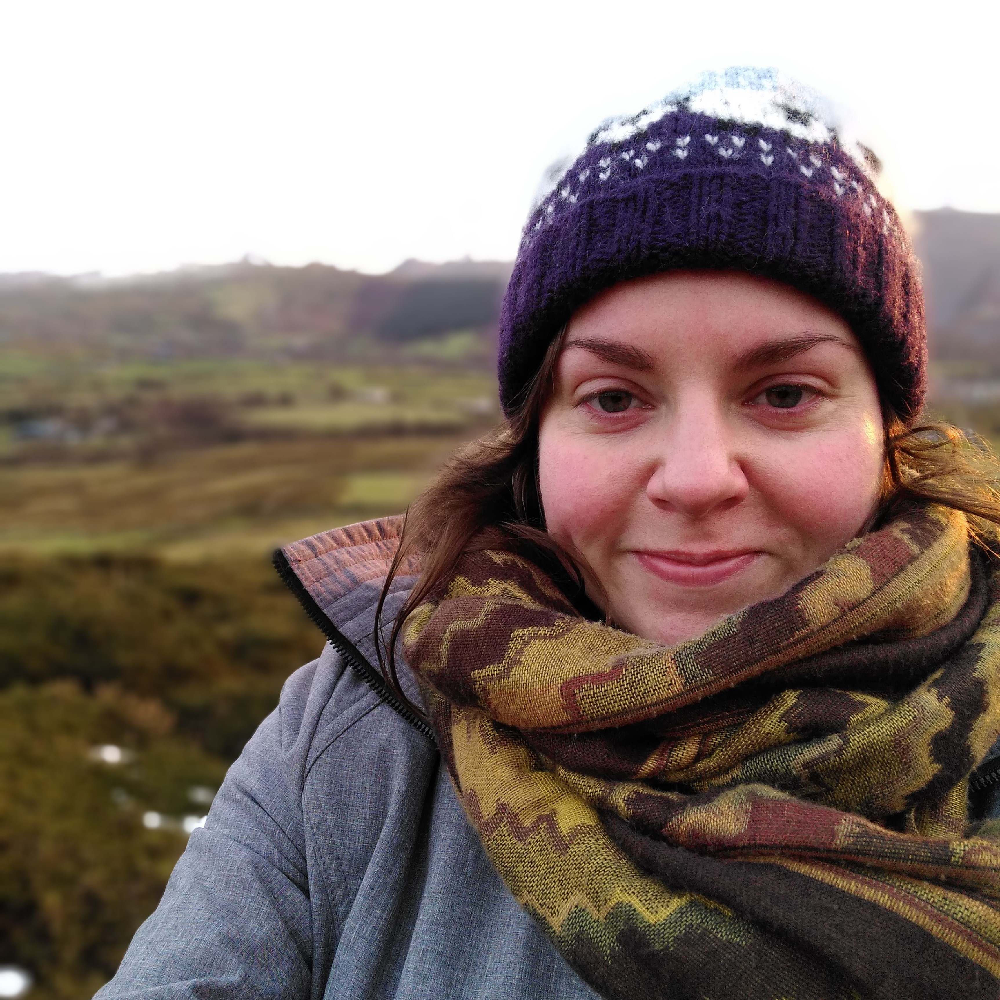

{kind=link}
I'm currently based at UWE as an Associate Lecturer. I have previously worked as a lecturer at Bangor University and at the University of Huddersfield.
My work to date has focused on Welsh grammar research. My last research post was at Cardiff University where I contributed to the data collection and processing aspects of the CorCenCC project (see Output). My thesis
provides a detailed description of the Welsh impersonals like dywedir and casglwyd , and restrictions to
them, in order to identify the aspects of the Welsh impersonal morphology
that impact syntax. It also addresses the subject of unaccusativity in Welsh. See Output
for more information on my thesis and Projects
for other projects I've worked on.

In the tabs above, you'll find more information on my background in linguistics (Projects, Output) and one with a summary of my research written in Welsh (Cymraeg), in case you were wondering. Ideally I'd like to share all my data, but for now, the page data contains a few lists that might be of use to people researching Welsh.